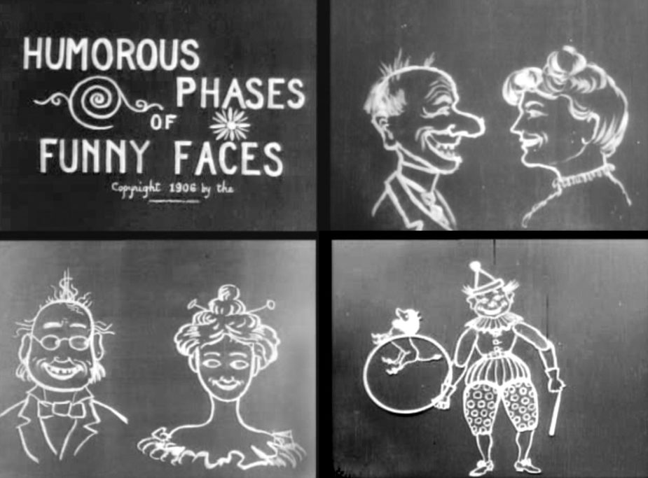

Vroegere animatie:
In de 19de eeuw werd animatie gemaakt zonder computers. Er werden Flip Books (kleine blaadjes die samen gevormd worden tot een animatie boekje) en de zoötroop, een uitvinding die bestaat uit een rechtopstaande cilinder met verticale sleuven.
Pas in de 20ste eeuw begonnen echte animatiefilms gemaakt te worden. Wegens technische achterstand, kon dat namelijk niet in de 19de eeuw.
Film historieken beschouwen J. Stuart Blackton's Humorous Phases of Funny Faces uit 1906 als de eerste animated short film ooit gemaakt.
De film gaat over een man die grappige gezichten op een schoolbord tekent en ze beginnen uit zichzelf te bewegen en te veranderen.

Enkele pioniers van het genre waren Émile Cohl (1908), Winsor McCay (Gertie the Dinosaur, 1914) en Eadweard Muybridge. In Japan verscheen de allereerste vorm van anime rond 1917. In 1926 beleefde Die Abenteuer des Prinzen Achmed van Lotte Reiniger, de eerste avondvullende animatiefilm (gemaakt met knippatronen), zijn première in Berlijn. In 1928 verscheen Walt Disney's Steamboat Willie, het debuut van Mickey Mouse, een van de eerste tekenfilms met geluid.
Eind jaren '70 van de 20e eeuw begonnen filmmakers met digitale animaties in hun films. Hierdoor is een heel nieuw animatiefilmgenre ontstaan genaamd 3D-computeranimatie. Luxo Jr. uit 1986 van John Lasseter (Pixar) is de eerste film die geheel door een computer geanimeerd is. De film Toy Story (ook van Pixar) is de eerste computergegenereerde avondvullende film. Enkele andere voorbeelden van computergegenereerde films zijn Shrek en Ice Age.